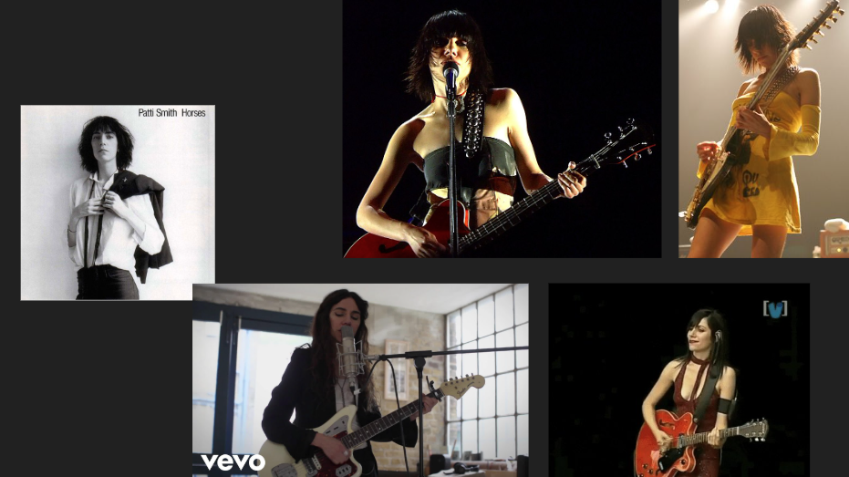
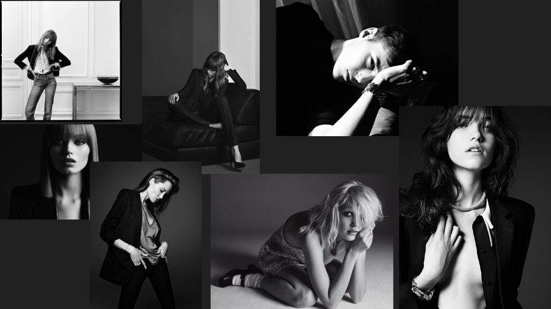
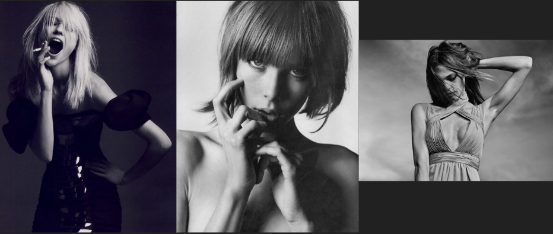
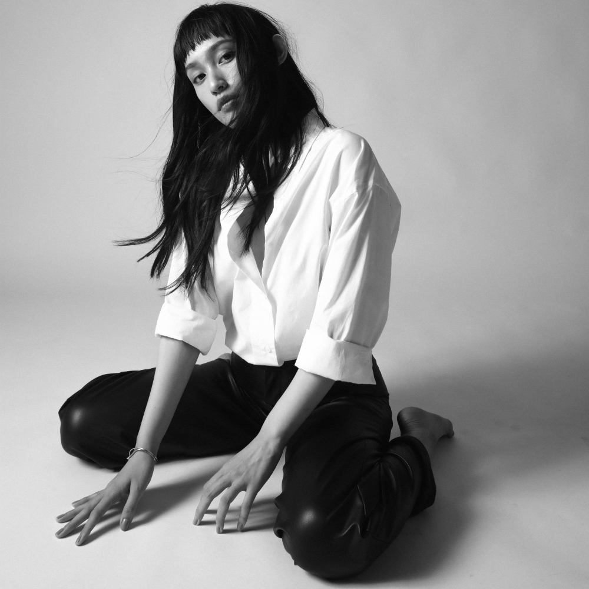
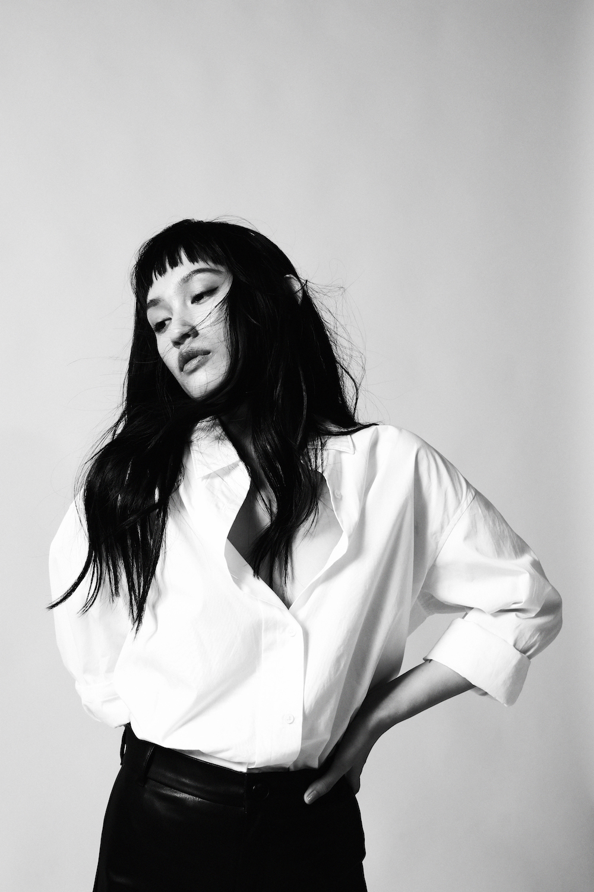
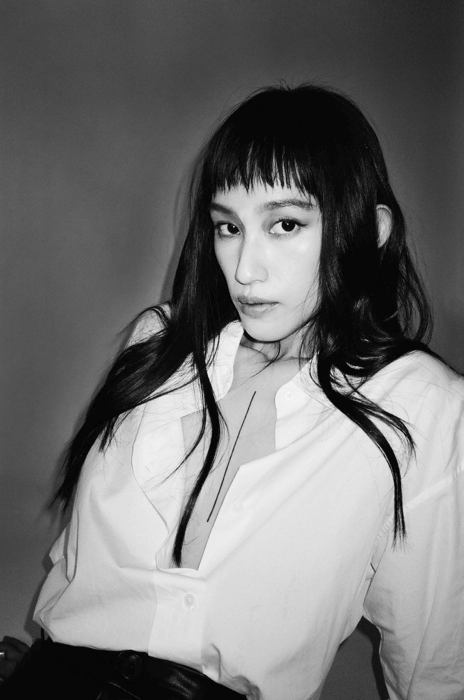

Artist & Repertoire for 王頌
王頌｜首張專輯視覺風格提案
藝人定位
暗魅系創作女聲。有稜角，有張力，不刻意討好。
張狂的佔慾，末明的偏執 — 整個方向刻意迴避柔美或商業流行的視覺語言，目標是透過態度、輪廓與情緒張力，而非精緻感，來呈現藝人的個性。
視覺方向拆解
#暗魅系
#有創性
#俐落
#有格調
#不造作
#黑白攝影
#高對比
#陰鬱感
#個性感女人味
#自信直接
#收斂
#情緒張力
藝人定位
有創性、俐落、有格調、不造作。搖滾氣質吉他女歌手，形象鮮明且具個人感，洗鍊輪廓。
拍攝風格
黑白攝影、高對比、陰鬱感。以半身、近身或半姿為主，強調輪廓與直接的鏡頭存在感。參考：Hedi Slimane。
服裝造型
部分裸露，個性感女人味。凸顯身體線條、刺青與個人特質，帶有冷感與含蓄張力。
妝髮
微亂自然髮感，輕妝為主，不走浮誇路線。以凸顯五官輪廓為主要目標。
肢體語言
自信、直接、收斂。透過姿態傳達而非誇張動作。以半身、近身或斜躺為主要構圖。
藝人參考
Patti Smith — 氣場與存在感。
PJ Harvey — 稜角與肢體張力。
椎名林檎 — 強烈個人風格。
參考素材



拍攝成果
最終成果由初始視覺方向發展而來，將參考語言轉譯為藝人的具體形象。攝影及製作由創意製作團隊執行。




這個案例說明了什麼
- 能夠將抽象的藝人定位轉化為具體可執行的視覺方向
- 以參考素材研究為基礎，有效對齊創意團隊的共識
- 跨攝影、造型、氛圍與視覺呈現的審美判斷力
- 從概念到執行的創意專案協調經驗
- 具備主導並親身執行視覺方向的能力，不僅限於協調角色
- 能夠在尊重藝人個性的前提下，建立清晰且可操作的視覺框架